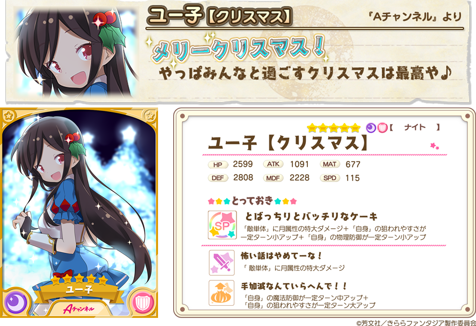

『きららファンタジア』をご利用いただき、誠にありがとうございます。
12月22日17:00より、新イベント「エトワリアのサンタクロース」で活躍するキャラクターが登場する「期間限定ピックアップ召喚」を開催いたします。
クリスマス衣装の「Aチャンネル」ユー子、「NEW GAME!」はじめ、「ステラのまほう」たまきが期間限定で登場します。
2017年12月22日 17:00 ～ 2017年12月27日 13:59
※期間限定キャラクターはこの期間中のみ召喚から登場いたします。
※★5アリス【クリスマス】・★5千矢【クリスマス】・★4るん【クリスマス】も引き続き登場いたしますが、ピックアップ期間は終了しております。
・10回召喚では★4以上のキャラクターが1体以上確定します。
・初回のみ星彩石300個で10回召喚が可能です。
・期間中、下記ピックアップ対象キャラクターの提供割合がアップしています。

※表示されているキャラクターイラストは進化前のものです。
※表示されているステータスは、表示キャラクターの最大Lv（限界突破4回）時のものです。
※ユー子【クリスマス】・はじめ【クリスマス】・たまき【クリスマス】の期間限定召喚終了後の登場予定はございません。
・提供割合の詳細はゲーム内の召喚画面＞提供割合からご確認ください。
・ピックアップ対象のキャラクターは同一レアリティの他のキャラクターよりも提供割合が高く設定されています。
・期間限定ピックアップ召喚終了後、今回登場した期間限定キャラクターが今後の更新において再登場する可能性がございます。
・キャンペーン内容は予告なく変更になる場合がございます。ご了承ください。
今後とも『きららファンタジア』をよろしくお願い申し上げます。